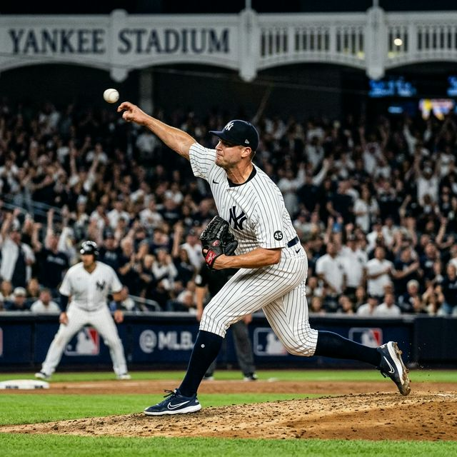
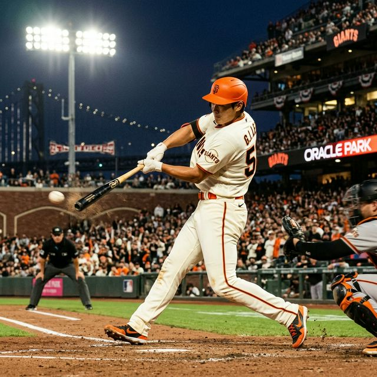
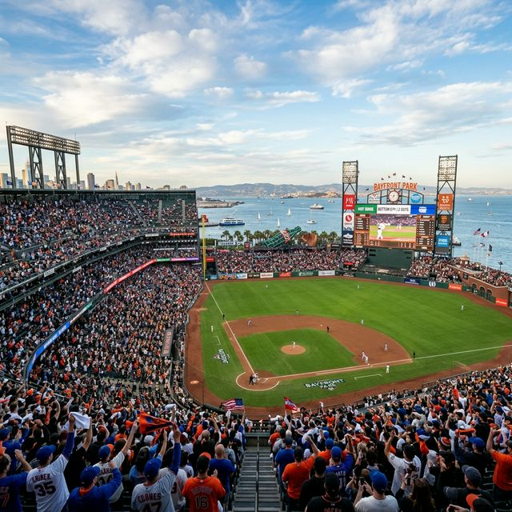

2026 MLB: 개막전 양키스에 스윕 당한 자이언츠, 이정후 10타수 1안타 고전
화려한 기대 속에 샌프란시스코의 오라클 파크에서 치러진 2026 미국프로야구 메이저리그(MLB)의 개막 시리즈 성적표는 샌프란시스코 자이언츠와 이정후 선수에게 씁쓸한 상처만 남겼습니다. 뉴욕 양키스와의
홈 개막 3연전에서 샌프란시스코는 빈공에 시달리며 결국 3경기를 모두 내주는 수모(스윕 패배)를 겪었습니다. 무엇보다 한국 팬들의 가장 큰 기대를 모았던 '바람의 손자' 이정후 선수는
3차전에 1번 타자로 승격되어 시즌 첫 안타(2루타)를 쳐냈음에도 불구하고, 종합 10타수 1안타(타율 0.100)라는 지독한 슬로 스타트에 빠졌습니다. 양키스의 압도적인 마운드
앞에 고전한 자이언츠 타선의 문제점과, 이정후 선수가 남은 샌디에이고 원정에서 풀어야 할 과제를 심층 팩트체크로 짚어봅니다.

▲ 이번 개막 3연전 내내 샌프란시스코 타격을 꽁꽁 묶어버린 양키스의 살인적인 구위. 오라클 파크를 침묵 속에 빠뜨렸습니다. (ratio 1:1)
1. 타율 0.100의 침묵, 이정후에게 찾아온 혹독한 개막전
이정후는 양키스와의 개막 1, 2차전에 모두 선발 5번 타자(우익수)로 출전했습니다. 시범경기부터 끌어올린 타격감을 바탕으로 자이언츠의 핵심 타선에 중용되었지만, 양키스 선발진의 견고한 변화구 제구와
불펜의 100마일 육박 강속구에 타이밍이 엇나가며 번번이 범타와 삼진으로 물러나야 했습니다.
🔥 양키스 3연전 이정후 팩트체크 기록
- 시리즈 타율: 10타수 1안타 (타율 0.100), 볼넷 1개, 득점 1개.
- 타순의 변화: 1~2차전 무안타의 침묵 이후, 3차전에서는 팀 공격의 혈을 뚫기 위해 1번 타자 겸 우익수로 전진
배치되었습니다.
- 팀의 득점 가뭄: 샌프란시스코는 개막 1, 2차전을 연속으로 영봉패 당하며 단 1점도 내지 못하는 굴욕적인 모습을 보였습니다.
하지만 희망의 불씨가 완전히 꺼진 것은 아니었습니다. 29일(한국시간) 벌어진 3차전 경기에서 1번 타자로 돌아온 이정후는 마침내 2026시즌 마수걸이 안타를 뽑아냈습니다. 타선의 최전방에서 분위기
반전을 시도한 그의 노력이 팀의 혈맥을 살짝이나마 뚫어준 셈입니다.

▲ 3연전 3차전 3회 말, 드디어 침묵을 깨고 양키스 투수 윌 워렌의 스위퍼를 공략해 날카로운 2루타를 뽑아낸 이정후의 스윙. (ratio 1:1)
2. 3회 말, 팀의 개막 연속 무득점을 깬 '이정후의 2루타'
3차전, 팀이 0-2로 끌려가며 내내 답답한 양상을 띠던 3회 말. 선두타자로 타석에 선 이정후는 양키스 선발 투수 윌 워렌이 4구째 던진 시속 136.8㎞짜리 스위퍼(Sweeper)를
정확히 받아쳐 우측 펜스를 향하는 날카로운 2루타를 작렬시켰습니다.
이후 후속 타자인 맷 채프먼이 중전 안타를 때려내자, 2루에 있던 이정후는 특유의 빠른 발로 홈 플레이트를 밟았습니다. 이는 앞서 2경기 연속 양키스 투수진에게 단 1점도 뽑지 못하고 영패를 당하던
샌프란시스코 자이언츠의 개막 이후 최초의 득점(First Run)이었습니다. 비록 멀티히트로 이어지진 않았지만, 슬라이더 계열의 궤적이 큰 스위퍼 타임을 잡아냈다는 것은
그가 점차 미국 본토 투수들의 변칙 투구에 적응하고 있음을 보여주는 긍정적인 신호입니다.
3. 관전 포인트: 양키스 포수 웰스의 영리한 '프레이밍'과 아쉬운 챌린지 번복
오라클 파크를 가득 메운 홈 팬들에게 가장 아쉬운 순간은 7회 공격이었습니다. 1-3으로 뒤진 7회, 양키스의 네 번째 투수인 팀 힐을 상대로 이정후는 루킹 삼진(삼구 삼진)을 당하고 맙니다.
자이언츠 vs 양키스 3연전 종합 스코어 보드
| 매치업 날짜 |
경기 결과 |
샌프란시스코 주안점 |
| 1차전 |
NYY 우세 (자이언츠 영봉패) |
양키스 마운드에 압도당하며 팀 안타 극소수 |
| 2차전 |
NYY 우세 (자이언츠 영봉패) |
에런 저지의 홈런포 가동 및 자이언츠 방망이 침묵 |
| 3차전 (3/29) |
NYY 3 - 1 SF |
이정후 2루타 및 첫 득점. 그러나 9회 병살타로 역전 실패 |
당시 7회 타석에서 3구째 공이 처음엔 볼(Ball)로 선언되었으나, 양키스의 안방마님 오스틴 웰스가 곧바로 챌린지 판독(비디오 판독)을 요청했습니다. 판독 결과
스트라이크 존을 아슬아슬하게 통과한 것으로 인정되며 삼진으로 판정이 번복되었습니다. 공격의 끈을 이어가려던 이정후 본인에게도, 추격을 간절히 바라던 벤치에게도 너무나 뼈아픈 투구 프레이밍의
결과였습니다.

▲ 스윕 패배를 당했지만 오라클 파크를 가득 메워준 팬들. 이제 자이언츠 타선은 절치부심하여 샌디에이고 원정에서 승리를 되가져와야 합니다. (ratio
1:1)
4. 샌디에이고와의 원정 3연전, 반등이 시급한 자이언츠
샌프란시스코는 마지막 9회 말, 무사 1, 2루라는 극적인 동점 혹은 역전 찬스를 잡고도 허무하게 경기를 내줬습니다. 해리슨 베이더가 양키스의 철벽 마무리 데이비드 베드나르에게 삼진으로 물러났고,
패트릭 베일리마저 2루 땅볼 병살타를 치면서 오라클 파크의 외마디 탄식과 함께 경기를 그대로 종료시켰습니다.
💡 다음 관전 포인트: 31일부터 시작되는 'SD 샌디에이고 원정'
강팀 양키스와의 대결에서 치명적인 3연패를 허용했지만 시즌은 길고 아직 159경기가 남았습니다. 자이언츠는 하루 휴식을 취한 뒤 3월 31일부터 김하성의 친정팀 샌디에이고
파드리스(SD)와 펫코 파크 원정 3연전에 돌입합니다. 이정후 선수가 따뜻한 캘리포니아 남부에서 빼앗긴 타격 리듬을 회복하고 다시 3할 타자의 본능을 보여줄 수 있을지, 팬들의
진정한 응원이 필요한 4월의 첫 주가 시작됩니다.
아무리 뛰어난 타자라도 시즌 중 10타수 무안타의 수렁에 빠지는 시기는 존재합니다. 이정후 선수가 겪고 있는 0.100의 타율 통증 역시 거친 메이저리그에 완벽히 정착하기 위해 거쳐야 할 혹독한
성장통일 것입니다. 2루타의 짜릿한 손맛을 기억하며, 다가오는 샌디에이고 전에서 통쾌한 담장 밖 아치 홈런으로 팬들의 가슴을 뻥 뚫어주기를 기원합니다! ⚾️
데이터 출처: 3월 29일 자 연합뉴스 및 MLB.com 공식 스코어보드 종합
#이정후2루타
#MLB개막전결산
#샌프란시스코스윕패
#양키스3연승
#이정후1할타율
#오라클파크
#오스틴웰스챌린지
#에런저지홈런
#윌워렌스위퍼
#샌디에이고원정준비